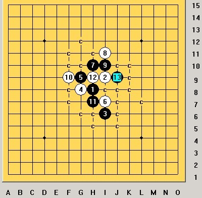

请教一些关于岚月2打必胜的问题
#1 请教一些关于岚月2打必胜的问题 作者：雾都少帅 发表时间：2009-8-22 10:13:49
=======上图对应的爱五子棋谱代码如下，以便你拆解：========
h8i9i6g8g9i7h10h9i10g10j7i11
======================================================
11能必胜吗 如图 白12黑怎么胜 ？好象这个12可以骗黑石3。7
各位大师请指教
［ 潇洒 于 2009-8-28 2:12:23 时奖励此帖[金币加 20 威望加1］
#2 Re:请教一些关于岚月2打必胜的问题 作者：刀魂 发表时间：2009-8-22 10:21:21
=======上图对应的爱五子棋谱代码如下，以便你拆解：========
h8i9i6g8g9i7h10h9i10g10j7i11k8h5j9h11j8
====================================================== （后面轻松杀）
=======上图对应的爱五子棋谱代码如下，以便你拆解：========
h8i9i6g8g9i7h10h9i10g10j7i11k8h5j9l7j8
====================================================== （后面轻松杀）
=======上图对应的爱五子棋谱代码如下，以便你拆解：========
h8i9i6g8g9i7h10h9i10g10j7i11k8l9j9l7j6
====================================================== （后面轻松杀）败12全谱：
 刀魂之岚月败12.rar
刀魂之岚月败12.rar
#3 Re:请教一些关于岚月2打必胜的问题 作者：雾都少帅 发表时间：2009-8-22 10:29:14
谢谢 刀魂大师 已解决#4 Re:请教一些关于岚月2打必胜的问题 作者：雾都少帅 发表时间：2009-8-22 12:36:08
=======上图对应的爱五子棋谱代码如下，以便你拆解：========
h8i9i6g8g9i7h10i11i10f9h11h9g12f13k10j10h12h13f10e10d11e11
======================================================
这是兔子哥哥发的岚月2打地毯谱 我发现的一个bug 到20后不知道为什么没谱了 后面黑不好胜
大家看看
#5 Re:Re:请教一些关于岚月2打必胜的问题 作者：雾都少帅 发表时间：2009-8-22 13:03:46
引用：正解如图
原文由 雾都少帅 发表于 2009-8-22 12:36:08 :
=======上图对应的爱五子棋谱代码如下，以便你拆解：========
h8i9i6g8g9i7h10i11i10f9h11h9g12f13k10j10h12h13f10e10d11e11
======================================================这是兔子哥哥发的岚月2打地毯谱 我发现的一个bug 到20后不知道为什么没谱了 后面黑不好胜
大家看看
#6 Re:请教一些关于岚月2打必胜的问题 作者：雾都少帅 发表时间：2009-8-22 13:09:49
关键是11活3反了 其实谱里还有一些这样的问题 大家对待终结谱不能完全的相信 自己做过才塌实
逆刃大师不是也发现有bug了吗 欢迎跟贴指出来 大家共同学习
欢迎大家继续关注此贴 有岚月问题也可以贴
#7 Re:请教一些关于岚月2打必胜的问题 作者：侯军学棋 发表时间：2009-8-22 14:00:05
=======上图对应的爱五子棋谱代码如下，以便你拆解：========
h8i9i6g8g9i7h10i11i10f9h11h9g12f13k10j10h12h13f10e10h7j9g13g11f12
======================================================21反向也可以杀
［ 失落刀 于 2009-8-22 21:56:06 时奖励此帖[金币加 20 威望加1］
#8 Re:Re:请教一些关于岚月2打必胜的问题 作者：雾都少帅 发表时间：2009-8-22 20:39:49
 不错 呵呵
不错 呵呵
#9 Re:请教一些关于岚月2打必胜的问题 作者：雾都少帅 发表时间：2009-8-25 18:44:33
=======上图对应的爱五子棋谱代码如下，以便你拆解：========
h8i9i6h9j9i10i8g8j11k10h10j8f7i7h6g6g7k7f8e9f5f9g9e7g4j7h7h5e6d7
======================================================
25走那里能胜 还是以前有问题
#10 Re:Re:请教一些关于岚月2打必胜的问题 作者：雾都少帅 发表时间：2009-8-25 18:46:43
=======上图对应的爱五子棋谱代码如下，以便你拆解：========
h8i9i6h9j9i10i8g8j11k10h10j8f7i7h6g6g7k7f8e9f5f9g9e7h5i5
======================================================
#11 Re:请教一些关于岚月2打必胜的问题 作者：索非亚 发表时间：2009-8-25 19:52:09
=======上图对应的爱五子棋谱代码如下，以便你拆解：========
h8i9i6h9j9i10i8g8j11k10h10j8f7i7h6g6g7k7f8e9h5
======================================================
［ 潇洒 于 2009-8-28 2:12:04 时奖励此帖[金币加 20 威望加1］
#12 Re:Re:请教一些关于岚月2打必胜的问题 作者：雾都少帅 发表时间：2009-8-27 17:19:00
谢谢 11楼的索非亚 已解决 、
#13 Re:请教一些关于岚月2打必胜的问题 作者：索非亚 发表时间：2009-8-27 23:52:25
不用客气。在这里我也得到了太多朋友的帮助。我也要感谢你们，大家还有那些岚二局面感觉不太好杀或者有误的请发下，一起解决。#14 Re:请教一些关于岚月2打必胜的问题 作者：sonix 发表时间：2009-8-28 8:22:32
岚月.part01.rar
岚月.part02.rar
［ 潇洒 于 2009-8-28 9:21:47 时奖励此帖[金币加 20 威望加1］
［ 逆刃 于 2009-8-28 15:22:51 时花20金币送鲜花一朵］
#15 Re:请教一些关于岚月2打必胜的问题 作者：逆刃 发表时间：2009-8-28 10:55:35
LS发的是什么啊？解压不了啊。#16 Re:请教一些关于岚月2打必胜的问题 作者：潇洒 发表时间：2009-8-28 11:11:13
我可以解压
#17 Re:请教一些关于岚月2打必胜的问题 作者：逆刃 发表时间：2009-8-28 12:15:32
我看到了，应该是sonix自己做的谱吧，打的3圈，保留到VCT，精简了很多，错误应该不多，但仍然有不少疏漏。建议选择查找没有盘面标记的局面，这样就可以看到漏掉的点。另外要是加上标记就更完美了。#18 Re:Re:请教一些关于岚月2打必胜的问题 作者：sonix 发表时间：2009-8-28 14:00:27
引用：是自己花时间扫的，感谢逆刃LS的指正，及论坛热心人的帮助
原文由 逆刃 发表于 2009-8-28 12:15:32 :
我看到了，应该是sonix自己做的谱吧，打的3圈，保留到VCT，精简了很多，错误应该不多，但仍然有不少疏漏。建议选择查找没有盘面标记的局面，这样就可以看到漏掉的点。另外要是加上标记就更完美了。
#19 Re:请教一些关于岚月2打必胜的问题 作者：sonix 发表时间：2009-8-28 17:29:28
标记补全了岚月.part01.rar岚月.part02.rar［ 失落刀 于 2009-8-28 18:02:45 时花20金币送鲜花一朵］
#20 Re:Re:请教一些关于岚月2打必胜的问题 作者：雾都少帅 发表时间：2009-8-28 21:57:37
引用：
原文由 sonix 发表于 2009-8-28 17:29:28 :
标记补全了［ 失落刀 于 2009-8-28 18:02:45 时花20金币送鲜花一朵］
呵呵 我也扫完了 标志点不怎么会弄
好象 06的扫的谱大点 07版终结者我扫下来20m 和 sonix的16m差不多大
继续关注再来我的明星2打必胜问题